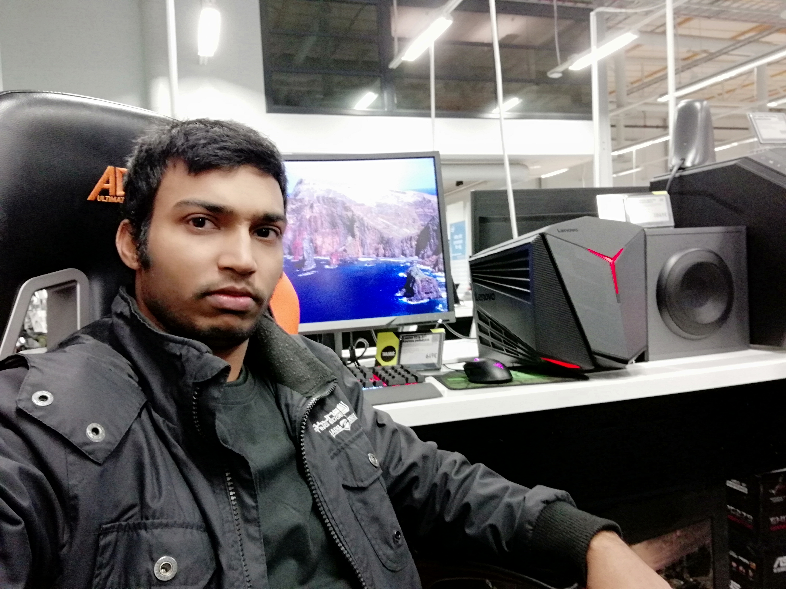
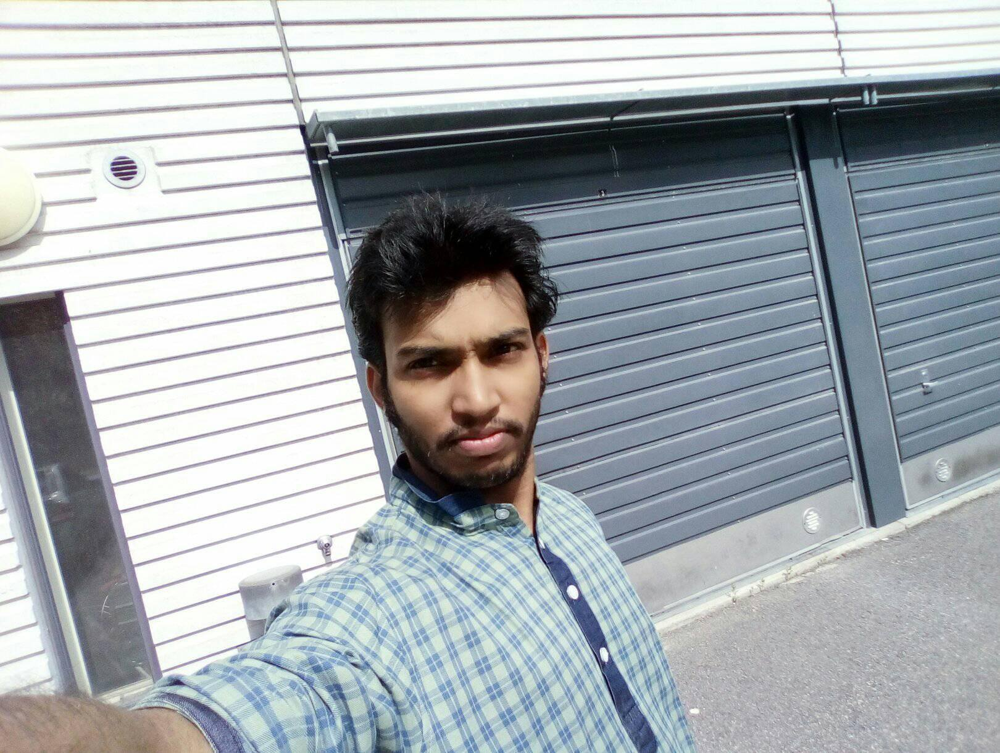
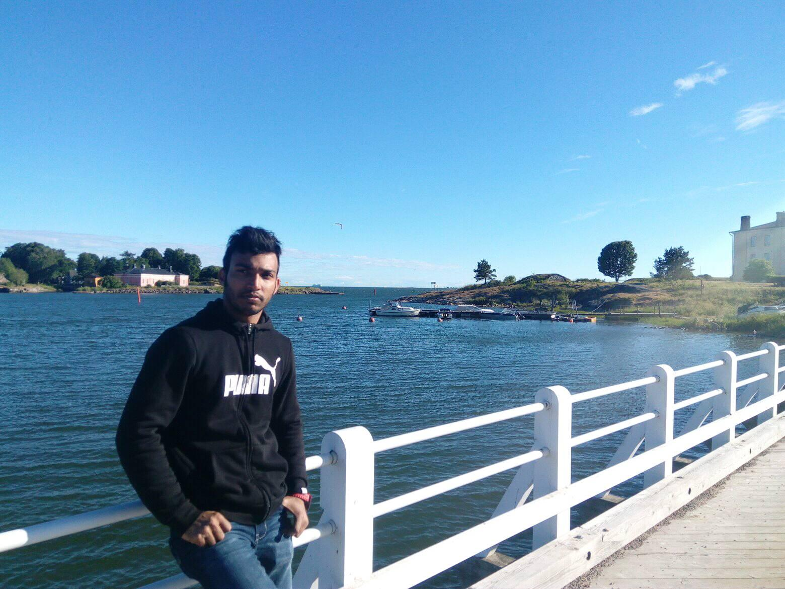

Myself
  I am Md Farukul Islam. I am a third year student of VAMK. I am very accommodated and open-minded person. I believe that I have the ability to work under stressed condition and with strong inter-personal skill. I simply enjoy working in team and like to motivate others. I always try to learn something new and advance technology. Thats my primary reason to study in IT at VAMK. I passed my last 1.5 years with great joy although studying in IT is not so easy. There was always ups and downs, but I never lose my motivation to learn something new. I was never worried about my course results because if I can learn something my results will be always going fine. My results are neither so outstanding nor so bad I but end of the semester I am satisfied with my results. I already have one University BSc degree in Electrical and Electronic Engineering field which I completed from my country Bangladesh. I love to travel. I also like photography, bodybuilding, fishing, hiking and play different indoor (table tennis, billiard, bowling) and outdoor (football, cricket) games. I want to learn more about IT security, artificial intelligence and IoT and I think these are the future of IT. If I get the opportunity to work in Europe, Finland I will definitely do it. I have a plane to do my masters on IT security system in Alto University.
Go to Weekly activities